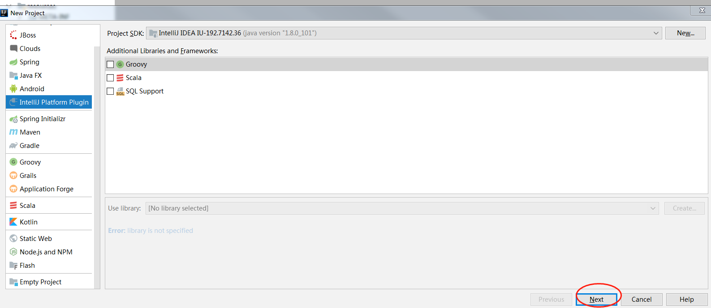
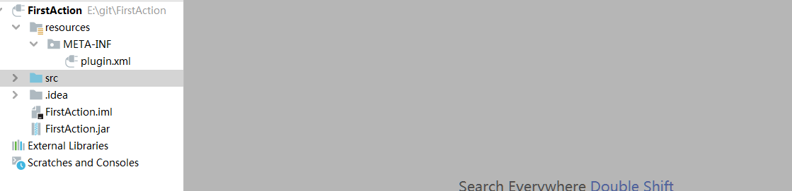
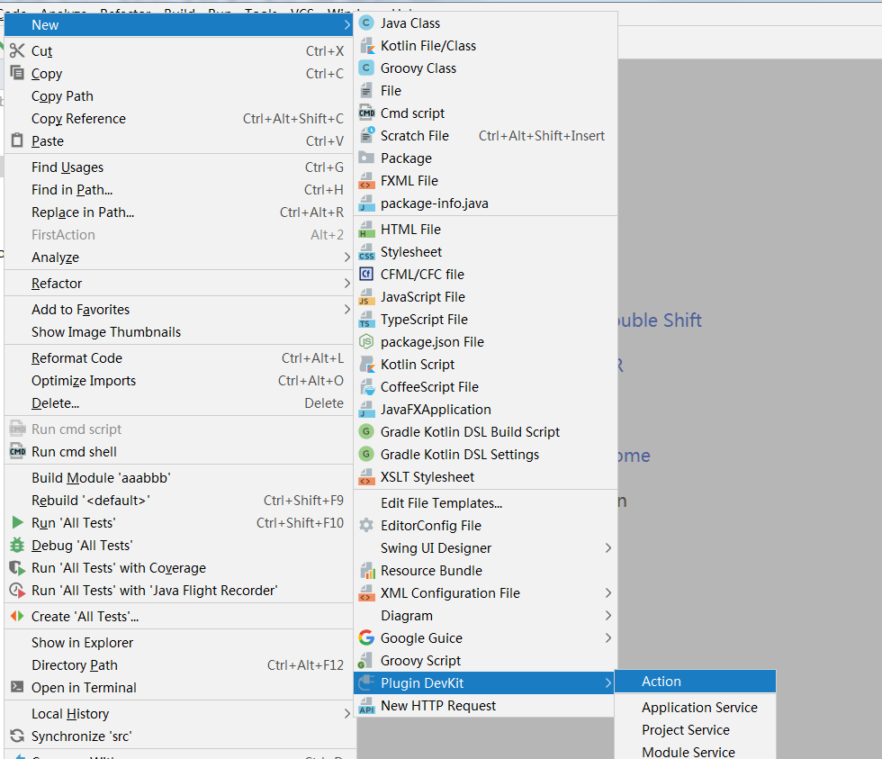
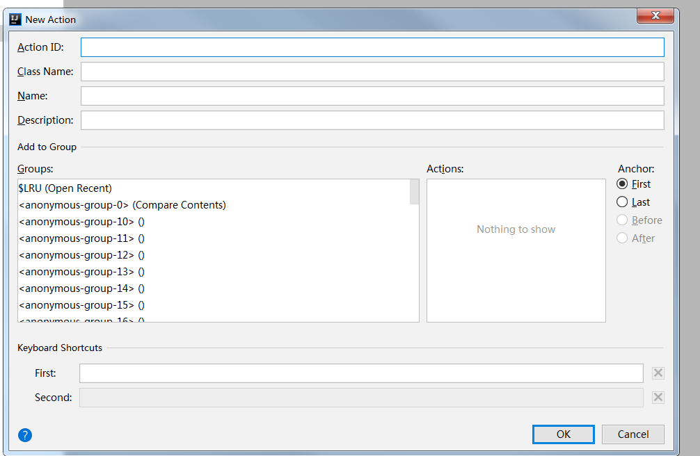
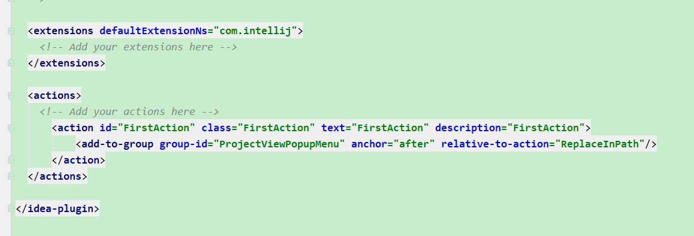

为什么开发idea插件?
在工作中，有很多的时候需要对一件事重复做很多次，比较麻烦。我们公司最近就遇到了，领导让同事开发出了一个自动化测试的项目，是根据规则，配置要测试的接口的yml，通过maven命令启动jar扫描配置文件yml，自动对比输入的数据和查出来的是否相同，这就导致每次测试一个接口，都需要输入一个maven命令去指定测试那个yml，每次都很繁琐，然后就想到了怎么才能一键根据当前选中的文件，自动输入文件名，去扫描，这时就想到自定义idea插件。
idea官网文档：http://www.jetbrains.org/intellij/sdk/docs/welcome.html
插件分类：
自定义编程语言的支持：包括语法高亮、文件类型识别、代码格式化、代码查看和自动补全等等。这类插件包括.gitignore，.shell这些。
框架继承：其实就是类似基于IntelliJ开发出另一个IDEA，比如AndroidStudio就是通过将Android SDK整合到了IntelliJ IDEA当中。比如还可以将Spring、Struts等框架集成到IDEA中，方便用户在IDEA使用使用特定的框架更加的方便
工具集成：对于IDEA定制一些个性化或者是实用的工具，比如lombok和translation插
附加UI：对于标准的UI界面进行修改，如在编辑框中加入一个背景图片等等。
参考： https://blog.csdn.net/ExcellentYuXiao/article/details/80273109
idea创建插件工程

刚建好的工程如下：

plugin.xml是工程的配置
1
2
3
4
5
6
7
8
9
10
11
12
13
14
15
16
17
18
19
20
21
22
23
24
25
26
27
28
29
30
31
32
33
34
35
36
37
38
39
40
41
42
43
44
45
46
47
48
49
50
51
52
53
54
55
56
57
58
59
60
61
62
63
64
65
66
67
| <idea-plugin>
<name>MyPlugin</name>
<id>com.example.plugin.myplugin</id>
<description>my plugin description</description>
<change-notes>Initial release of the plugin.</change-notes>
<version>1.0</version>
<vendor url="http://www.jetbrains.com" email="support@jetbrains.com" />
<depends>MyFirstPlugin</depends>
<idea-version since-build="3000" until-build="3999"/>
<application-components>
<component>
<interface-class>com.foo.Component1Interface</interface-class>
<implementation-class>com.foo.impl.Component1Impl</implementation-class>
</component>
</application-components>
<project-components>
<component>
<interface-class>com.foo.Component2</interface-class>
</component>
</project-components>
<module-components>
<component>
<interface-class>com.foo.Component3</interface-class>
</component>
</module-components>
<actions>
...
</actions>
<extensionPoints>
...
</extensionPoints>
<extensions xmlns="com.intellij">
...
</extensions></idea-plugin>
|
这时候就可以开始创建Action：

在弹出的对话框中填充下列字段，然后点击 OK：

Action ID: action 唯一 id，推荐 format: PluginName.ID
Class Name: 要被创建的 action class 名称
Name: menu item 的文本
Description: action 描述，toolbar 上按钮的提示文本，可选
Add to Group：选择新 action 要被添加到的 action group（Groups, Actions）以及相对其他 actions 的位置（Anchor）
Keyboard Shortcuts：指定 action 的第一和第二快捷键
我选择的是ProjectViewPopupMenu，这个是将插件放在项目右键的菜单里启动，然后再选择在当前有的哪个插件前或者后
创建完在yml文件里就会有如下信息对应的是哪个组下的

下面是自己编写的小插件
1
2
3
4
5
6
7
8
9
10
11
12
13
14
15
16
17
18
19
20
21
22
23
24
25
26
27
28
29
30
31
32
33
34
35
36
37
38
39
40
41
42
43
44
45
46
47
48
49
50
51
52
53
54
55
56
57
58
59
60
61
62
63
64
65
66
67
68
69
70
71
72
73
74
75
76
77
78
79
80
81
82
83
84
85
86
87
88
89
90
91
92
93
94
95
96
97
98
99
100
101
102
103
104
105
106
107
108
109
110
111
112
113
114
115
116
| import com.intellij.openapi.actionSystem.*;
import com.intellij.openapi.project.Project;
import com.intellij.openapi.ui.Messages;
import com.intellij.openapi.vfs.VirtualFile;
import org.jetbrains.annotations.SystemIndependent;
import java.io.*;
public class FirstAction extends AnAction {
private Project mProject;
public final String PATH = "C:\\case\\case.bat";
public final String PATHPAGE = "C:\\case";
public final String YML = "yml";
public final String MVN = "mvn rj-api-test:run -Dpath=";
public final String TO_PATH = "/src/test/java";
@Override
public void actionPerformed(AnActionEvent e) {
FileWriter fw = null;
mProject = e.getData(PlatformDataKeys.PROJECT);
@SystemIndependent String basePath = mProject.getBasePath();
DataContext dataContext = e.getDataContext();
if (YML.equals(getFileExtension(dataContext))) {
try {
String fileName = getFileName(dataContext);
String appointFilePath = this.getAppointFilePath(basePath + TO_PATH,fileName);
File file = new File(PATH);
File file1 = new File(PATHPAGE);
if(!file1.exists()){
file1.mkdir();
if (!file.exists()) {
file.createNewFile();
}
}
fw = new FileWriter(file);
fw.write("cd " + basePath + "\r\n");
fw.write(MVN + appointFilePath + fileName + "\r\n");
fw.write("pause");
fw.flush();
Runtime.getRuntime().exec("cmd /c start " + PATH);
} catch (IOException ex) {
ex.printStackTrace();
} finally {
try {
fw.close();
} catch (IOException ex) {
ex.printStackTrace();
}
}
} else {
Messages.showMessageDialog(mProject, "请选择yml文件!!! ◕ ں ◕",
"温馨提示", Messages.getInformationIcon());
}
}
public String getAppointFilePath(String path,String fileName){
File fileFoleds = new File(path);
String[] lists = fileFoleds.list();
String zhiPath = "";
for(int i =0;i<lists.length;i++){
String pa = path+"/"+lists[i];
File readFile = new File(pa);
if(readFile.isDirectory()){
String appointFilePath = getAppointFilePath(pa, fileName);
if(!"".equals(appointFilePath)){
return appointFilePath;
}
}else{
String houzui =
readFile.getName().substring(readFile.getName().lastIndexOf(".")+1);
if("yml".equals(houzui) && readFile.isFile() &&
readFile.getName().equals(fileName)){
String[] split = readFile.getParent().split("\\\\");
for(int j = split.length-1;j>=0;j--){
if(!"java".equals(split[j])){
if(!"".equals(split[j])){
zhiPath = split[j]+"/"+zhiPath;
}else{
zhiPath = split[j];
}
}else{
break;
}
}
return zhiPath;
}
}
}
return zhiPath;
}
@Override
public void update(AnActionEvent event) {
String extension = getFileExtension(event.getDataContext());
this.getTemplatePresentation().setEnabled(extension != null && "yml".equals(extension));
}
public static String getFileExtension(DataContext dataContext) {
VirtualFile file = CommonDataKeys.VIRTUAL_FILE.getData(dataContext);
return file == null ? null : file.getExtension();
}
public static String getFileName(DataContext dataContext) {
VirtualFile file = CommonDataKeys.VIRTUAL_FILE.getData(dataContext);
return file == null ? null : file.getName();
}
}
|